CURRENT-SOURCE-CRADLE
Source 4.6/5 · mounted/action pending
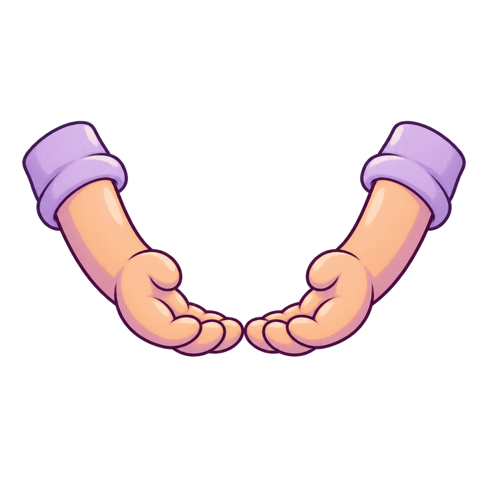
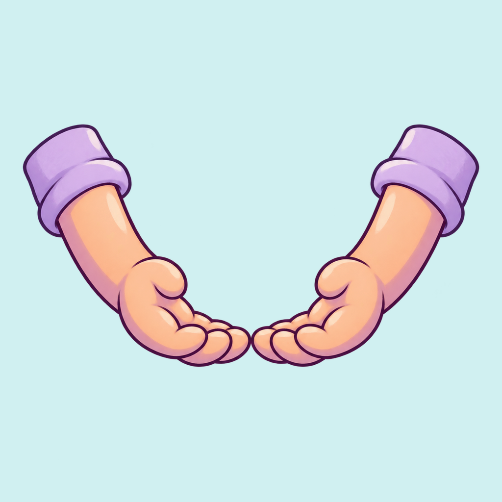
The current fresh description-only catching arms are strongly stylized: rounded lavender cuffs, warm peach palms, deep plum contours and two calm painted value bands. The cupped palms form a broad open cradle rather than lifelike fingers or a framed scene. Full native, white and aqua views show attached contours without a visible matte plate. This preserves the already documented attempt06 source-only4.6 opinion; connection to the complete caregiver, contact at catch and settling remain separate action priorities.
assets/opera/worlds/nursery/refinement_v1/cradle.png81f2cba89d4e0c48d2d4ba1c4ac7386d7e96b4c50e58c6a93b1b27b5e0f10193CURRENT-SOURCE-PILLOWS
Source 4.6/5 · mounted/action pending
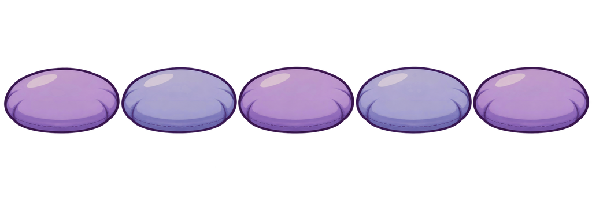
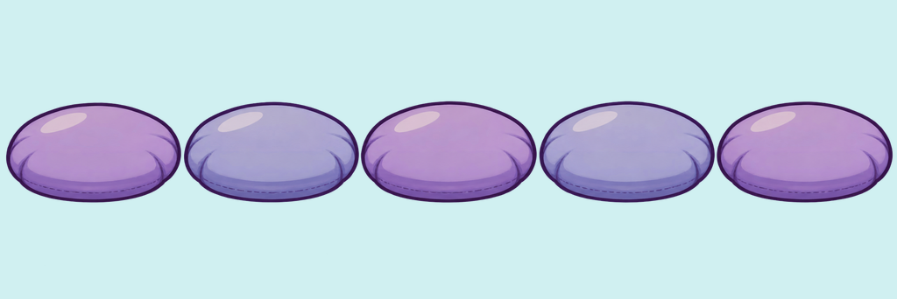
All five rounded cushions use the same soft toy volume, plum outline, grouped broad lavender/periwinkle shading and restrained seam marks. Their horizontal row is coherent and calm. The current exact source agrees with the earlier selected attempt03 source-only4.6 opinion. The runtime crop6,115,1014,117 selects the strip; alignment, landing/deformation and the complete safe-return sequence remain separate.
assets/opera/worlds/nursery/refinement_v1/pillows.pngbf5f86e916b4c512c761518ad1815beac6df8c833d60980b71c73e4d7fada66fCURRENT-SOURCE-GEOLOGIST_FOSSIL
Source 4.2/5 · mounted/action pending
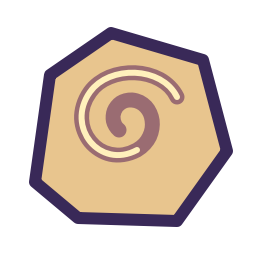
The fossil is immediately recognizable as a spiral in a warm stone, and its palette belongs to the project. Its polygonal slab, very heavy uniform contour and single flat fill read as a rough symbol beside the painted job props. At the declared132px hotspot the12px source contour is about6.2 screen pixels, above the usual2–4 contour range. Add broad quiet stone value bands and a gentler contour while preserving the one spiral and slab identity; excavation/brush contact remains unreviewed.
assets/opera/worlds/hotspots/geologist_fossil.svg058d257160448dabf8b6bce78cbb0a7c6b1bdedbacc6e47db908c5d501d4e3bdCURRENT-SOURCE-GEOLOGIST_LAYERED_ROCK
Source 4.0/5 · mounted/action pending
The colored strata and two mineral dots are easy to distinguish, but the solid dark slab, straight parallel stripes and heavy boundary read as a diagram. The two yellow dots are isolated accents rather than natural grouped mineral detail. The declared128px object makes the12px boundary about6px wide. Preserve the three colored educational layers and two dots while giving the stone a rounded mass and calm painted values. Its reuse as a PAN overlay is also a semantic action priority; prettier stone cannot prove actual panning.
assets/opera/worlds/hotspots/geologist_layered_rock.svg5bca0522dbadf1fb5658a99f58a9ea88d15ed62d27966db4e4829ef692d3bcceCURRENT-SOURCE-TEACHER_LESSON_BOARD
Source 4.2/5 · mounted/action pending
The lesson board keeps large non-text circles and a triangle, an accessible cream field and a clear silhouette. The uniform heavy rim and thin bent legs read as an interface card on wires, with little toy-board material or warm painted volume. At the190px hotspot the12px rim is about8.9px, too dominant beside authored career art. Preserve the exact six shapes and arrangement, improve the frame/supports and broad grouped values, and separately test every lesson interaction; one static board cannot pass PATTERN/COUNT/ADD/MATCH.
assets/opera/worlds/hotspots/teacher_lesson_board.svg74eb7da7e7f5ad516ac157c89388983e7a3c63ca9987dba44157ae5e0c852043CURRENT-SOURCE-GOAL_GEOLOGIST
Source 4.2/5 · mounted/action pending

The two aqua/lavender crystals and broad facets are child-readable, but the dark triangular base and heavy angled boundaries read as a coarse badge rather than a rounded collectible toy prop. Preserve the two crystal identities and large facets; add a calm rounded mineral base and broad value grouping. The declared150px object puts the10px internal borders near5.9 screen pixels. Geode splitting, crystal reveal and actual collection remain unreviewed.
assets/opera/worlds/props/goal_geologist.svg09ba5403d9d5bfbafec397f884fec4c725e50b3ba643c6ab66e4dd346d16b150CURRENT-SOURCE-OPERA_CREST_GEOLOGIST
Source 4.4/5 · mounted/action pending
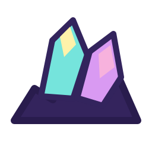
This crest exactly reuses the geologist reward silhouette. Its strong simplified crystal identity is suitable as an icon, and the compact palette is clear. The coarse dark mountain base and flat angular shapes still limit its overall artwork polish. Treat UI readability separately from world-prop realism and preserve the shared symbol; an icon-native variant can reuse the refined crystal shapes with an appropriate small-size contour. Exact mounted UI score remains unassigned.
assets/opera/worlds/ui/crests/opera_crest_geologist.svg09ba5403d9d5bfbafec397f884fec4c725e50b3ba643c6ab66e4dd346d16b150CURRENT-NURSERY-CUSHION-01
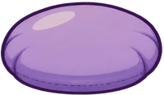
Source 4.6/5
Lavender cushion 1 keeps the shared rounded padded silhouette, broad value grouping, deep plum edge and restrained seam. Static/source opinion only; no individual landing/contact or complete-action acceptance.
Individual object 1 within the full five-cushion native row displayed above; no invented individual UV binding.CURRENT-NURSERY-CUSHION-02
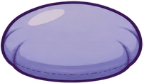
Source 4.6/5
Periwinkle cushion 2 keeps the shared rounded padded silhouette, broad value grouping, deep plum edge and restrained seam. Static/source opinion only; no individual landing/contact or complete-action acceptance.
Individual object 2 within the full five-cushion native row displayed above; no invented individual UV binding.CURRENT-NURSERY-CUSHION-03
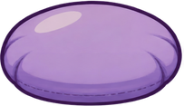
Source 4.6/5
Lavender cushion 3 keeps the shared rounded padded silhouette, broad value grouping, deep plum edge and restrained seam. Static/source opinion only; no individual landing/contact or complete-action acceptance.
Individual object 3 within the full five-cushion native row displayed above; no invented individual UV binding.CURRENT-NURSERY-CUSHION-04
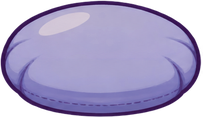
Source 4.6/5
Periwinkle cushion 4 keeps the shared rounded padded silhouette, broad value grouping, deep plum edge and restrained seam. Static/source opinion only; no individual landing/contact or complete-action acceptance.
Individual object 4 within the full five-cushion native row displayed above; no invented individual UV binding.CURRENT-NURSERY-CUSHION-05
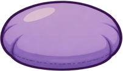
Source 4.6/5
Lavender cushion 5 keeps the shared rounded padded silhouette, broad value grouping, deep plum edge and restrained seam. Static/source opinion only; no individual landing/contact or complete-action acceptance.
Individual object 5 within the full five-cushion native row displayed above; no invented individual UV binding.